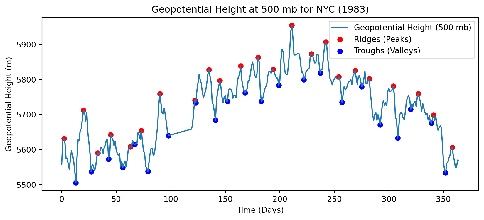
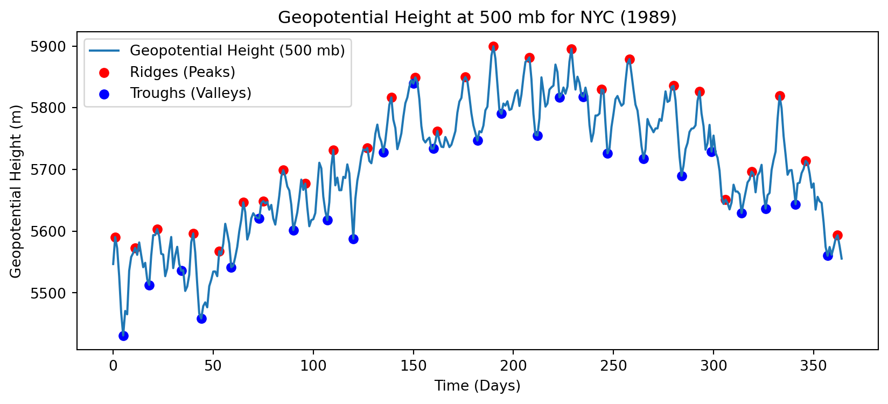
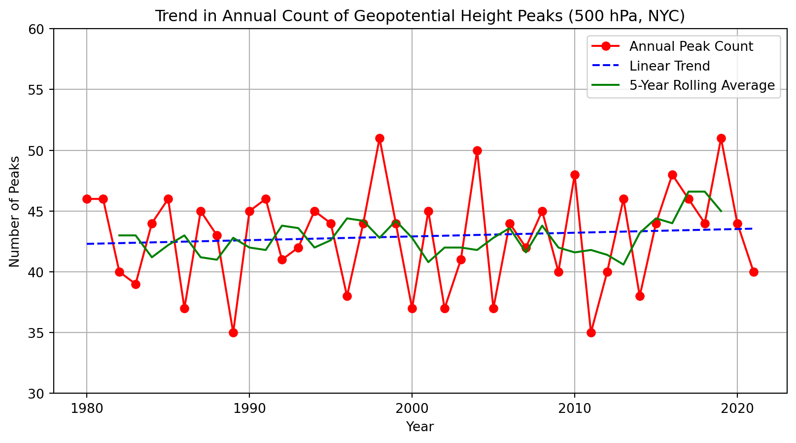

Have you ever wondered what’s happening above when extreme weather strikes New York City? While we often look at surface temperatures or rainfall rates, the answer may lie 5.5 kilometers overhead, in the upper troposphere.
The hidden rhythms of the atmosphere reveal themselves through sweeping patterns of upper-tropospheric circulation, particularly at the 500 hPa level. High above New York City, ridges and troughs carve invisible highways in the sky, steering the weather systems that bring heat waves, powerful storms, and stubborn droughts. By examining decades of atmospheric data, it’s possible to trace how these large scale features have shifted over time and how their evolving behavior connects to the extreme weather events that shape daily life in NYC.
The Dataset
Capturing the story of the atmosphere requires looking high above the skyline, where patterns at the 500 hPa level quietly shape the weather we experience below.
To piece together this story, I worked with daily geopotential height data spanning from 1979 to 2021, a time frame long enough to reveal both subtle shifts and dramatic changes. I focused specifically on the grid point closest to New York City’s latitude and longitude, zeroing in on the atmospheric fingerprints left above the city through heatwaves, storms, and droughts.
With this long, continuous record, it became possible to trace the rising and falling of ridges and troughs over decades, offering a detailed glimpse into how the atmosphere’s high-altitude patterns have evolved alongside the city they influence.
The Method
Revealing the patterns hidden high above New York City started with organizing decades of atmospheric data into a form that could be carefully explored.
Using Python tools like xarray and pandas, I gathered daily geopotential height values at the 500 hPa level from 1979 to 2024, focusing on the grid point closest to NYC’s coordinates.
The data was first broken down year by year, capturing the unique atmospheric fingerprint of each calendar year. From there, it was organized decade by decade to trace broader shifts across longer timescales. To dig even deeper, each year was further separated season by season, Spring, Summer, Fall, and Winter, making it possible to observe how the behavior of ridges and troughs evolved not only over decades, but also within the natural flow of each year.
With the seasons, years, and decades carefully mapped out, the foundation was set for a closer look at how the upper atmosphere shapes NYC’s most extreme weather.
/Users/davidlopez/opt/anaconda3/envs/capstone/lib/python3.12/site-packages/xarray/backends/plugins.py:110: RuntimeWarning:
Engine 'rasterio' loading failed:
numpy.dtype size changed, may indicate binary incompatibility. Expected 96 from C header, got 88 from PyObject


Before diving into long term trends or seasonal composites, it was important to first get a clear sense of how ridges and troughs appeared in the raw data itself.
Using Python, I loaded each year’s data file, spanning from 1979 to 2021, and isolated the grid point closest to NYC’s coordinates (approximately 40.7°N, 74.0°W) at the 500 hPa level. For every year, I extracted the time series of daily geopotential height values, providing a day by day view of how the atmosphere’s “pressure surface” moved up and down over the city.
To identify key moments when the atmosphere formed strong ridges or deep troughs, I used a simple peak finding algorithm. Peaks in the data corresponded to atmospheric ridges (linked to heatwaves and calmer weather), while troughs indicated dips in the height field (often connected to storms and unsettled weather).
By plotting each year individually and marking the detected peaks and troughs, it became possible to visually confirm the natural variability in NYC’s upper-atmospheric conditions. These plots provided an essential first step: establishing a clear baseline of how ridges and troughs appeared in the daily data before moving into deeper, more structured seasonal and decadal analysis.
Tracking Changes in Peak Frequency Over Time
After confirming how ridges and troughs appeared in the daily data, the next step was to look at the bigger picture: how often strong upper-tropospheric features, both ridges and troughs were forming each year, and whether that frequency had shifted over time.
To do this, I combined the daily geopotential height data for NYC from 1980 to 2021 into one continuous time series. Using a peak detection method, I identified all days when the 500 hPa geopotential height rose or dipped significantly relative to the mean, capturing both atmospheric ridges (highs) and troughs (lows).
Once the peaks were detected, I counted the total number each year. This provided a simple but powerful measure: the annual count of prominent atmospheric waves impacting NYC.
From there, I fit a linear trend to the yearly counts to see if there was a clear long term pattern, whether the number of large scale features was increasing, decreasing, or holding steady over time. To smooth out short term ups and downs, I also calculated a five year rolling average.
Plotting all of this together, the raw yearly counts, the trend line, and the rolling average revealed important first insights into how the upper atmosphere’s day to day variability over NYC has evolved across recent decades. This step helped bridge the gap between individual daily events and longer term atmospheric behavior.
Code
import xarray as xrimport pandas as pdimport numpy as npimport matplotlib.pyplot as pltfrom scipy.signal import find_peaksfrom sklearn.linear_model import LinearRegressionnyc_lat =40.7128nyc_lon =74.0060file_list = [f"hgt.{year}.nc"for year inrange(1980, 2022)]ts_list = []forfilein file_list: ds = xr.open_dataset(file) nyc_500hpa = ds['hgt'].sel(lat=nyc_lat, lon=nyc_lon, level=500.0, method='nearest') ts_list.append(nyc_500hpa)hgt_500_nyc = xr.concat(ts_list, dim="time")df = hgt_500_nyc.to_dataframe().reset_index().set_index("time")y = df["hgt"].values time = df.index peaks, _ = find_peaks(y, height=np.mean(y))peak_dates = time[peaks]df_peaks = pd.DataFrame({"date": peak_dates})df_peaks["year"] = df_peaks["date"].dt.yearpeak_counts = df_peaks.groupby("year").size().reset_index(name="peak_count")X = peak_counts["year"].values.reshape(-1, 1) y = peak_counts["peak_count"].valuesmodel = LinearRegression()model.fit(X, y)trend_line = model.predict(X)peak_counts["rolling_avg"] = peak_counts["peak_count"].rolling(window=5, center=True).mean()plt.figure(figsize=(10, 5))plt.plot(peak_counts["year"], peak_counts["peak_count"], marker="o", linestyle="-", color="r", label="Annual Peak Count")plt.plot(peak_counts["year"], trend_line, linestyle="--", color="b", label="Linear Trend")plt.plot(peak_counts["year"], peak_counts["rolling_avg"], linestyle="-", color="g", label="5-Year Rolling Average")plt.xlabel("Year")plt.ylabel("Number of Peaks")plt.title("Trend in Annual Count of Geopotential Height Peaks (500 hPa, NYC)")plt.legend()plt.grid()plt.yticks(np.arange(30, 65, 5))plt.ylim(30, 60) plt.show()slope = model.coef_[0]print(f"Linear trend slope: {slope:.2f} peaks per year")

Linear trend slope: 0.03 peaks per year
The figure above shows how the total number of significant geopotential height peaks (both ridges and troughs) at 500 hPa over New York City varied each year from 1980 through 2021. Overall, the plot reveals considerable year to year variability in the number of peaks, with annual totals generally fluctuating between about 35 and 50 peaks per year. Some years exhibit sharper increases or decreases compared to surrounding years, highlighting the natural atmospheric variability that can occur on annual timescales. This variability may reflect influences from broader climate patterns such as the El Niño–Southern Oscillation (ENSO) or the North Atlantic Oscillation (NAO), but also a large degree of random, chaotic behavior inherent to the mid-latitude atmosphere.
Despite the strong fluctuations from year to year, the linear trend line fitted through the data (shown as a dashed blue line) does reveal a slight positive slope, indicating a minimal upward trend in peak frequency. Although the increase appears small, it is important to recognize that even subtle changes in the behavior of upper-tropospheric circulation can have significant impacts. A slight rise in the number of disturbances could potentially lead to more frequent weather disruptions at the surface, such as shifts in storm tracks, changes in precipitation patterns, or more episodes of extreme weather affecting the NYC region.
A closer inspection of the five year rolling average reveals an important feature beginning around 2018. For much of the record, the rolling average remained fairly constrained between approximately 40 and 45 peaks per year, underscoring the relative stability of annual upper-tropospheric dynamical activity over New York City. However, around 2018, the five year rolling average crosses above 45 for the first time in the dataset. This shift suggests that during the late 2010s, there was a notable clustering of years with higher than average peak counts. Although this upward movement is subtle, it breaks from the previous multi decade pattern of bounded variability. The fact that the rolling mean exceeds its historical range hints at a potential emerging signal of increased dynamical activity at 500 hPa, which could have downstream impacts on surface weather patterns. Even minor increases in the frequency of ridges and troughs can modulate storminess, precipitation extremes, and temperature variability in the NYC region, meaning that this change, while modest in absolute terms, warrants attention.
Seasonal Analysis of Geopotential Height Peaks over NYC (1980–2021)
To better understand how upper-tropospheric dynamics may vary not just year to year, but within different times of the year, we separated the peaks by season. Examining trends by season can provide insight into whether particular parts of the year,are becoming more dynamically active. By grouping the detected peaks into seasonal categories and analyzing how the frequency of these peaks has changed over time, we can identify more nuanced patterns that annual summaries might obscure.
The figure displays the annual number of seasonal peaks in 500 hPa geopotential height over New York City from 1979 to 2021. Each line represents one season: Winter (red), Spring (orange), Summer (green), and Fall (blue). Winter consistently has the highest number of peaks each year, highlighting the season’s strong dynamical activity typically associated with more active weather patterns like storms and stronger jet streams. Fall follows closely behind, while Spring and Summer generally record fewer peaks, consistent with the relatively quieter atmospheric conditions expected in warmer months.
Notably, Spring shows a sharp decline in peak counts during the early 1980s, stabilizing at lower values thereafter. Winter displays some variability across the record, with slight increases in peak counts in the early 2000s and mid 2010s. Summer remains relatively steady over time, although there are small oscillations year to year. Fall shows more variability but tends to hover around a similar range throughout the period. Overall, while there is year to year variability, the seasonal patterns remain remarkably stable. However, subtle increases or decreases within seasons,especially Winter’s slight upward swings in more recent years,may signal emerging shifts in the behavior of upper-tropospheric dynamics over the region. While seasonal patterns of peak frequency have remained relatively consistent since 1980, small but noticeable fluctuations,particularly during Winter, highlight the importance of monitoring subtle changes in upper-tropospheric dynamics, as even modest shifts can influence local and regional weather variability over time.
Identifying and Visualizing Extremes (top and bottom 5%) in 500 hPa Geopotential Height
When analyzing upper-tropospheric dynamics, it is crucial not only to understand the overall patterns but also to specifically highlight the most extreme events. By isolating the top and bottom 5% of weekly averaged 500 hPa geopotential height values, we can focus on the strongest ridging (extreme highs) and deepest troughing (extreme lows) over NYC.
This approach allows us to better capture and visualize the rare, high impact atmospheric configurations that may drive significant local weather events, such as heatwaves, cold snaps, and major storms.
Below, we apply this method to identify and plot these extreme events.
The figure above shows the weekly averaged 500 hPa geopotential height over New York City from 1979 to 2021, highlighting the most extreme atmospheric events. The blue curve traces the natural week to week variability of the geopotential height field, giving us a sense of the background fluctuations in the upper-troposphere. Overlaid on this curve are two sets of highlighted points: the red dots represent the top 5% of weekly geopotential height values, corresponding to extreme ridging events, while the black dots capture the bottom 5% of values, signaling extreme troughing events. To better visualize where these extremes sit relative to the full distribution, we also include dashed lines marking the 95th percentile (in red) and the 5th percentile (in black).
This visualization allows us to isolate and study the most significant departures from typical conditions. By focusing on these extreme highs and lows, we can begin to uncover patterns associated with impactful weather events, such as heat waves linked to strong ridging or storms and cold air outbreaks associated with deep troughs. Identifying these extreme cases within the broader dataset provides a clearer lens for analyzing how the frequency and characteristics of extreme atmospheric conditions may have shifted over time, setting up the next steps in our analysis.
Modeling Seasonal Cycles and Long Term Changes with Harmonic Regression
To better understand the underlying structure of the 500 hPa geopotential height variability over New York City, we turn to harmonic regression. I chose this approach because the atmosphere naturally exhibits strong periodic behavior, particularly tied to the seasons. The rise and fall of geopotential heights throughout the year are not random; they follow a predictable, wave like pattern that harmonic regression is specifically designed to capture. By fitting sine and cosine functions to our data, we can model the repeating annual cycle with precision while also detecting any shifts or trends that depart from this expected rhythm.
Harmonic regression is particularly well suited for our research goals because it allows us to separate the regular, seasonally driven variability from the less predictable anomalies. In other words, it helps us see both the forest and the trees: we can quantify the typical yearly cycle of the atmosphere while also tracking how the timing, amplitude, or baseline of that cycle might be changing over time. This separation is crucial for identifying subtle but important signals, such as the amplification or weakening of seasonal peaks, or the gradual rise or fall in mean geopotential heights that could hint at broader climatic shifts.
To build our model, we incorporated several key components. First, we included a constant and a linear trend term to account for any long term changes in the data, such as a steady increase or decrease in average geopotential height over the decades. Next, to capture the strong seasonal cycle, we used a set of Fourier terms, representing annual periodicity with multiple harmonics to allow flexibility in the shape of the seasonal pattern. Finally, we fit a Seasonal ARIMA model to the residuals, helping account for any remaining autocorrelation and further improving the accuracy of our forecasts. Together, this Dynamic Harmonic Regression framework provides a powerful way to model both the predictable seasonal patterns and the less predictable long term variations in the 500 hPa geopotential height field over NYC.
Once the Dynamic Harmonic Regression (DHR) model is fitted, we can visualize both the historical observations and the forecasted behavior of the 500 hPa geopotential height over New York City. In the resulting plot, the solid blue line represents the observed weekly averaged geopotential heights from 1979 to 2021. This line captures the familiar seasonal rhythm, rising and falling with the natural progression of the seasons, but also reveals subtle year to year variations. Overlaid on the observations is a red dashed line, which shows the forecast produced by our harmonic regression model. Extending five years beyond the end of our dataset, this forecast projects the expected seasonal behavior of geopotential heights based on the patterns learned from the historical record. The model’s strength lies in its ability to maintain the seasonal structure, the characteristic peaks and valleys, while allowing for gradual shifts in the baseline level or in the amplitude of the cycles.
By comparing the forecast to the historical data, we can assess not only the persistence of the seasonal cycle but also whether any underlying trends are projected to continue into the near future. For example, if the baseline of the forecast continues to rise, it would suggest that geopotential heights at 500 hPa over NYC are trending higher, a signal that could be associated with broader changes in atmospheric circulation patterns or warming related impacts. Alternatively, shifts in the amplitude or timing of the seasonal peaks could point to changing dynamics in the way the atmosphere transitions between seasons.
This visualization serves as both a check on our model’s performance, how well it reproduces past behavior, and as a tool for gaining insight into the future behavior of extreme events, seasonal cycles, and long term trends in the upper-troposphere over New York City.
Source Code
---title: "Ridges, Troughs, and NYC Extremes: Unraveling Upper-Tropospheric Patterns Over Time"author: "David Lopez"date: "2025-04-27"bibliography: references.bibnumber-sections: falseformat: html: theme: default rendering: embed-resources code-fold: true code-tools: true toc: truejupyter: python3---# IntroductionHave you ever wondered what’s happening above when extreme weather strikes New York City? While we often look at surface temperatures or rainfall rates, the answer may lie 5.5 kilometers overhead, in the upper troposphere.The hidden rhythms of the atmosphere reveal themselves through sweeping patterns of upper-tropospheric circulation, particularly at the 500 hPa level. High above New York City, ridges and troughs carve invisible highways in the sky, steering the weather systems that bring heat waves, powerful storms, and stubborn droughts. By examining decades of atmospheric data, it’s possible to trace how these large scale features have shifted over time and how their evolving behavior connects to the extreme weather events that shape daily life in NYC.# The DatasetCapturing the story of the atmosphere requires looking high above the skyline, where patterns at the 500 hPa level quietly shape the weather we experience below. To piece together this story, I worked with daily geopotential height data spanning from 1979 to 2021, a time frame long enough to reveal both subtle shifts and dramatic changes. I focused specifically on the grid point closest to New York City’s latitude and longitude, zeroing in on the atmospheric fingerprints left above the city through heatwaves, storms, and droughts. With this long, continuous record, it became possible to trace the rising and falling of ridges and troughs over decades, offering a detailed glimpse into how the atmosphere’s high-altitude patterns have evolved alongside the city they influence.# The MethodRevealing the patterns hidden high above New York City started with organizing decades of atmospheric data into a form that could be carefully explored. Using Python tools like `xarray` and `pandas`, I gathered daily geopotential height values at the 500 hPa level from 1979 to 2024, focusing on the grid point closest to NYC’s coordinates.The data was first broken down year by year, capturing the unique atmospheric fingerprint of each calendar year. From there, it was organized decade by decade to trace broader shifts across longer timescales. To dig even deeper, each year was further separated season by season, Spring, Summer, Fall, and Winter, making it possible to observe how the behavior of ridges and troughs evolved not only over decades, but also within the natural flow of each year.With the seasons, years, and decades carefully mapped out, the foundation was set for a closer look at how the upper atmosphere shapes NYC’s most extreme weather.# Analysis```{python}import xarray as xrimport matplotlib.pyplot as pltfrom scipy.signal import find_peaksfile_names = ["hgt.1979.nc", "hgt.1980.nc", "hgt.1981.nc", "hgt.1982.nc", "hgt.1983.nc","hgt.1984.nc", "hgt.1985.nc", "hgt.1986.nc", "hgt.1987.nc", "hgt.1988.nc","hgt.1989.nc", "hgt.1990.nc", "hgt.1991.nc", "hgt.1992.nc","hgt.1993.nc", "hgt.1994.nc", "hgt.1995.nc", "hgt.1996.nc", "hgt.1997.nc","hgt.1998.nc", "hgt.1999.nc", "hgt.2000.nc", "hgt.2001.nc", "hgt.2002.nc","hgt.2003.nc", "hgt.2004.nc", "hgt.2005.nc", "hgt.2006.nc","hgt.2007.nc", "hgt.2008.nc", "hgt.2009.nc", "hgt.2010.nc","hgt.2011.nc", "hgt.2012.nc", "hgt.2013.nc","hgt.2014.nc", "hgt.2015.nc", "hgt.2016.nc", "hgt.2017.nc","hgt.2018.nc", "hgt.2019.nc", "hgt.2020.nc","hgt.2021.nc"]# NYC coordinatesnyc_lat =40.7128nyc_lon =74.0060forfilein file_names: ds = xr.open_dataset(file) nyc_series = ds['hgt'].sel(lat=nyc_lat, lon=nyc_lon, level=500, method='nearest') hgt_values = nyc_series.values peaks, _ = find_peaks(hgt_values, distance=10) troughs, _ = find_peaks(-hgt_values, distance=10) plt.figure(figsize=(10, 4)) plt.plot(hgt_values, label="Geopotential Height (500 mb)") plt.scatter(peaks, hgt_values[peaks], color='red', label="Ridges (Peaks)") plt.scatter(troughs, hgt_values[troughs], color='blue', label="Troughs (Valleys)") plt.title(f"Geopotential Height at 500 mb for NYC ({file.split('.')[1]})") plt.xlabel("Time (Days)") plt.ylabel("Geopotential Height (m)") plt.legend() plt.show() ds.close()```Before diving into long term trends or seasonal composites, it was important to first get a clear sense of how ridges and troughs appeared in the raw data itself.Using Python, I loaded each year's data file, spanning from 1979 to 2021, and isolated the grid point closest to NYC’s coordinates (approximately 40.7°N, 74.0°W) at the 500 hPa level.For every year, I extracted the time series of daily geopotential height values, providing a day by day view of how the atmosphere's "pressure surface" moved up and down over the city.To identify key moments when the atmosphere formed strong ridges or deep troughs, I used a simple peak finding algorithm. Peaks in the data corresponded to atmospheric ridges (linked to heatwaves and calmer weather), while troughs indicated dips in the height field (often connected to storms and unsettled weather).By plotting each year individually and marking the detected peaks and troughs, it became possible to visually confirm the natural variability in NYC’s upper-atmospheric conditions.These plots provided an essential first step: establishing a clear baseline of how ridges and troughs appeared in the daily data before moving into deeper, more structured seasonal and decadal analysis.# Tracking Changes in Peak Frequency Over TimeAfter confirming how ridges and troughs appeared in the daily data, the next step was to look at the bigger picture: how often strong upper-tropospheric features, both ridges and troughs were forming each year, and whether that frequency had shifted over time.To do this, I combined the daily geopotential height data for NYC from 1980 to 2021 into one continuous time series. Using a peak detection method, I identified all days when the 500 hPa geopotential height rose or dipped significantly relative to the mean, capturing both atmospheric ridges (highs) and troughs (lows).Once the peaks were detected, I counted the total number each year. This provided a simple but powerful measure: the annual count of prominent atmospheric waves impacting NYC.From there, I fit a linear trend to the yearly counts to see if there was a clear long term pattern, whether the number of large scale features was increasing, decreasing, or holding steady over time. To smooth out short term ups and downs, I also calculated a five year rolling average.Plotting all of this together, the raw yearly counts, the trend line, and the rolling average revealed important first insights into how the upper atmosphere’s day to day variability over NYC has evolved across recent decades. This step helped bridge the gap between individual daily events and longer term atmospheric behavior.```{python}import xarray as xrimport pandas as pdimport numpy as npimport matplotlib.pyplot as pltfrom scipy.signal import find_peaksfrom sklearn.linear_model import LinearRegressionnyc_lat =40.7128nyc_lon =74.0060file_list = [f"hgt.{year}.nc"for year inrange(1980, 2022)]ts_list = []forfilein file_list: ds = xr.open_dataset(file) nyc_500hpa = ds['hgt'].sel(lat=nyc_lat, lon=nyc_lon, level=500.0, method='nearest') ts_list.append(nyc_500hpa)hgt_500_nyc = xr.concat(ts_list, dim="time")df = hgt_500_nyc.to_dataframe().reset_index().set_index("time")y = df["hgt"].values time = df.index peaks, _ = find_peaks(y, height=np.mean(y))peak_dates = time[peaks]df_peaks = pd.DataFrame({"date": peak_dates})df_peaks["year"] = df_peaks["date"].dt.yearpeak_counts = df_peaks.groupby("year").size().reset_index(name="peak_count")X = peak_counts["year"].values.reshape(-1, 1) y = peak_counts["peak_count"].valuesmodel = LinearRegression()model.fit(X, y)trend_line = model.predict(X)peak_counts["rolling_avg"] = peak_counts["peak_count"].rolling(window=5, center=True).mean()plt.figure(figsize=(10, 5))plt.plot(peak_counts["year"], peak_counts["peak_count"], marker="o", linestyle="-", color="r", label="Annual Peak Count")plt.plot(peak_counts["year"], trend_line, linestyle="--", color="b", label="Linear Trend")plt.plot(peak_counts["year"], peak_counts["rolling_avg"], linestyle="-", color="g", label="5-Year Rolling Average")plt.xlabel("Year")plt.ylabel("Number of Peaks")plt.title("Trend in Annual Count of Geopotential Height Peaks (500 hPa, NYC)")plt.legend()plt.grid()plt.yticks(np.arange(30, 65, 5))plt.ylim(30, 60) plt.show()slope = model.coef_[0]print(f"Linear trend slope: {slope:.2f} peaks per year")```The figure above shows how the total number of significant geopotential height peaks (both ridges and troughs) at 500 hPa over New York City varied each year from 1980 through 2021. Overall, the plot reveals considerable year to year variability in the number of peaks, with annual totals generally fluctuating between about 35 and 50 peaks per year. Some years exhibit sharper increases or decreases compared to surrounding years, highlighting the natural atmospheric variability that can occur on annual timescales. This variability may reflect influences from broader climate patterns such as the El Niño–Southern Oscillation (ENSO) or the North Atlantic Oscillation (NAO), but also a large degree of random, chaotic behavior inherent to the mid-latitude atmosphere.Despite the strong fluctuations from year to year, the linear trend line fitted through the data (shown as a dashed blue line) does reveal a slight positive slope, indicating a minimal upward trend in peak frequency. Although the increase appears small, it is important to recognize that even subtle changes in the behavior of upper-tropospheric circulation can have significant impacts. A slight rise in the number of disturbances could potentially lead to more frequent weather disruptions at the surface, such as shifts in storm tracks, changes in precipitation patterns, or more episodes of extreme weather affecting the NYC region.A closer inspection of the five year rolling average reveals an important feature beginning around 2018. For much of the record, the rolling average remained fairly constrained between approximately 40 and 45 peaks per year, underscoring the relative stability of annual upper-tropospheric dynamical activity over New York City. However, around 2018, the five year rolling average crosses above 45 for the first time in the dataset. This shift suggests that during the late 2010s, there was a notable clustering of years with higher than average peak counts. Although this upward movement is subtle, it breaks from the previous multi decade pattern of bounded variability. The fact that the rolling mean exceeds its historical range hints at a potential emerging signal of increased dynamical activity at 500 hPa, which could have downstream impacts on surface weather patterns. Even minor increases in the frequency of ridges and troughs can modulate storminess, precipitation extremes, and temperature variability in the NYC region, meaning that this change, while modest in absolute terms, warrants attention.# Seasonal Analysis of Geopotential Height Peaks over NYC (1980–2021)To better understand how upper-tropospheric dynamics may vary not just year to year, but within different times of the year, we separated the peaks by season. Examining trends by season can provide insight into whether particular parts of the year,are becoming more dynamically active. By grouping the detected peaks into seasonal categories and analyzing how the frequency of these peaks has changed over time, we can identify more nuanced patterns that annual summaries might obscure.```{python}import xarray as xrimport matplotlib.pyplot as pltimport numpy as npfrom scipy.signal import find_peaksnyc_lat =40.7128nyc_lon =74.0060file_list = [f"hgt.{year}.nc"for year inrange(1980, 2022)]ts_list = []forfilein file_list: ds = xr.open_dataset(file) nyc_500hpa = ds['hgt'].sel(lat=nyc_lat, lon=nyc_lon, level=500.0, method='nearest') ts_list.append(nyc_500hpa)hgt_500_nyc = xr.concat(ts_list, dim="time")df = hgt_500_nyc.to_dataframe().reset_index()df["year"] = df["time"].dt.yeardf["month"] = df["time"].dt.monthseason_map = {12: "Winter", 1: "Winter", 2: "Winter",3: "Spring", 4: "Spring", 5: "Spring",6: "Summer", 7: "Summer", 8: "Summer",9: "Fall", 10: "Fall", 11: "Fall"}df["season"] = df["month"].map(season_map)y = df["hgt"].values peaks, _ = find_peaks(y, prominence=10)df_peaks = df.iloc[peaks].copy()df_peaks["peak_intensity"] = df_peaks["hgt"]df_peaks = df_peaks[["time", "hgt", "peak_intensity", "year", "season"]]peak_counts_seasonal = df_peaks.groupby(["year", "season"]).size().unstack()plt.figure(figsize=(12, 6))peak_counts_seasonal.rolling(window=5, min_periods=1).mean().plot(marker="o", linestyle="-", ax=plt.gca())plt.title("Seasonal Peak Frequency Trends (500 hPa Geopotential Height)")plt.xlabel("Year")plt.ylabel("Number of Peaks")plt.legend(title="Season")plt.grid()plt.yticks(np.arange(10, 21, 2))plt.ylim(10, 21) plt.show()```The figure displays the annual number of seasonal peaks in 500 hPa geopotential height over New York City from 1979 to 2021. Each line represents one season: Winter (red), Spring (orange), Summer (green), and Fall (blue).Winter consistently has the highest number of peaks each year, highlighting the season’s strong dynamical activity typically associated with more active weather patterns like storms and stronger jet streams. Fall follows closely behind, while Spring and Summer generally record fewer peaks, consistent with the relatively quieter atmospheric conditions expected in warmer months.Notably, Spring shows a sharp decline in peak counts during the early 1980s, stabilizing at lower values thereafter. Winter displays some variability across the record, with slight increases in peak counts in the early 2000s and mid 2010s. Summer remains relatively steady over time, although there are small oscillations year to year. Fall shows more variability but tends to hover around a similar range throughout the period.Overall, while there is year to year variability, the seasonal patterns remain remarkably stable. However, subtle increases or decreases within seasons,especially Winter’s slight upward swings in more recent years,may signal emerging shifts in the behavior of upper-tropospheric dynamics over the region. While seasonal patterns of peak frequency have remained relatively consistent since 1980, small but noticeable fluctuations,particularly during Winter, highlight the importance of monitoring subtle changes in upper-tropospheric dynamics, as even modest shifts can influence local and regional weather variability over time.# Identifying and Visualizing Extremes (top and bottom 5%) in 500 hPa Geopotential HeightWhen analyzing upper-tropospheric dynamics, it is crucial not only to understand the overall patterns but also to specifically highlight the most extreme events. By isolating the top and bottom 5% of weekly averaged 500 hPa geopotential height values, we can focus on the strongest ridging (extreme highs) and deepest troughing (extreme lows) over NYC.This approach allows us to better capture and visualize the rare, high impact atmospheric configurations that may drive significant local weather events, such as heatwaves, cold snaps, and major storms. Below, we apply this method to identify and plot these extreme events.```{python}import xarray as xrimport numpy as npimport matplotlib.pyplot as pltnyc_lat =40.7128nyc_lon =74.0060file_list = [f"hgt.{year}.nc"for year inrange(1980, 2022)]ts_list = []forfilein file_list: ds = xr.open_dataset(file) nyc_500hpa = ds['hgt'].sel(lat=nyc_lat, lon=nyc_lon, level=500.0, method='nearest') ts_list.append(nyc_500hpa)hgt_500_nyc = xr.concat(ts_list, dim="time")df = hgt_500_nyc.to_dataframe().reset_index().set_index("time")df = df.resample("W").mean()upper_threshold = np.percentile(df["hgt"], 95) lower_threshold = np.percentile(df["hgt"], 5)extreme_highs = df[df["hgt"] >= upper_threshold]extreme_lows = df[df["hgt"] <= lower_threshold]plt.plot(df.index, df["hgt"], label="500 hPa Geopotential Height", color='blue', alpha=0.6)plt.scatter(extreme_highs.index, extreme_highs["hgt"], color='red', label="Extreme Ridges (Top 5%)", alpha=0.8)plt.scatter(extreme_lows.index, extreme_lows["hgt"], color='black', label="Extreme Troughs (Bottom 5%)", alpha=0.8)plt.axhline(upper_threshold, color='red', linestyle='dashed', alpha=0.7, label="95th Percentile")plt.axhline(lower_threshold, color='black', linestyle='dashed', alpha=0.7, label="5th Percentile")plt.xlabel("Year")plt.ylabel("Geopotential Height (m)")plt.title("Extreme Events in 500 hPa Geopotential Height Over NYC")plt.legend()plt.grid()plt.show()```The figure above shows the weekly averaged 500 hPa geopotential height over New York City from 1979 to 2021, highlighting the most extreme atmospheric events. The blue curve traces the natural week to week variability of the geopotential height field, giving us a sense of the background fluctuations in the upper-troposphere. Overlaid on this curve are two sets of highlighted points: the red dots represent the top 5% of weekly geopotential height values, corresponding to extreme ridging events, while the black dots capture the bottom 5% of values, signaling extreme troughing events. To better visualize where these extremes sit relative to the full distribution, we also include dashed lines marking the 95th percentile (in red) and the 5th percentile (in black).This visualization allows us to isolate and study the most significant departures from typical conditions. By focusing on these extreme highs and lows, we can begin to uncover patterns associated with impactful weather events, such as heat waves linked to strong ridging or storms and cold air outbreaks associated with deep troughs. Identifying these extreme cases within the broader dataset provides a clearer lens for analyzing how the frequency and characteristics of extreme atmospheric conditions may have shifted over time, setting up the next steps in our analysis.# Modeling Seasonal Cycles and Long Term Changes with Harmonic RegressionTo better understand the underlying structure of the 500 hPa geopotential height variability over New York City, we turn to harmonic regression. I chose this approach because the atmosphere naturally exhibits strong periodic behavior, particularly tied to the seasons. The rise and fall of geopotential heights throughout the year are not random; they follow a predictable, wave like pattern that harmonic regression is specifically designed to capture. By fitting sine and cosine functions to our data, we can model the repeating annual cycle with precision while also detecting any shifts or trends that depart from this expected rhythm.Harmonic regression is particularly well suited for our research goals because it allows us to separate the regular, seasonally driven variability from the less predictable anomalies. In other words, it helps us see both the forest and the trees: we can quantify the typical yearly cycle of the atmosphere while also tracking how the timing, amplitude, or baseline of that cycle might be changing over time. This separation is crucial for identifying subtle but important signals, such as the amplification or weakening of seasonal peaks, or the gradual rise or fall in mean geopotential heights that could hint at broader climatic shifts.To build our model, we incorporated several key components. First, we included a constant and a linear trend term to account for any long term changes in the data, such as a steady increase or decrease in average geopotential height over the decades. Next, to capture the strong seasonal cycle, we used a set of Fourier terms, representing annual periodicity with multiple harmonics to allow flexibility in the shape of the seasonal pattern. Finally, we fit a Seasonal ARIMA model to the residuals, helping account for any remaining autocorrelation and further improving the accuracy of our forecasts. Together, this Dynamic Harmonic Regression framework provides a powerful way to model both the predictable seasonal patterns and the less predictable long term variations in the 500 hPa geopotential height field over NYC.Once the Dynamic Harmonic Regression (DHR) model is fitted, we can visualize both the historical observations and the forecasted behavior of the 500 hPa geopotential height over New York City. In the resulting plot, the solid blue line represents the observed weekly averaged geopotential heights from 1979 to 2021. This line captures the familiar seasonal rhythm, rising and falling with the natural progression of the seasons, but also reveals subtle year to year variations.Overlaid on the observations is a red dashed line, which shows the forecast produced by our harmonic regression model. Extending five years beyond the end of our dataset, this forecast projects the expected seasonal behavior of geopotential heights based on the patterns learned from the historical record. The model’s strength lies in its ability to maintain the seasonal structure, the characteristic peaks and valleys, while allowing for gradual shifts in the baseline level or in the amplitude of the cycles.By comparing the forecast to the historical data, we can assess not only the persistence of the seasonal cycle but also whether any underlying trends are projected to continue into the near future. For example, if the baseline of the forecast continues to rise, it would suggest that geopotential heights at 500 hPa over NYC are trending higher, a signal that could be associated with broader changes in atmospheric circulation patterns or warming related impacts. Alternatively, shifts in the amplitude or timing of the seasonal peaks could point to changing dynamics in the way the atmosphere transitions between seasons.This visualization serves as both a check on our model’s performance, how well it reproduces past behavior, and as a tool for gaining insight into the future behavior of extreme events, seasonal cycles, and long term trends in the upper-troposphere over New York City.